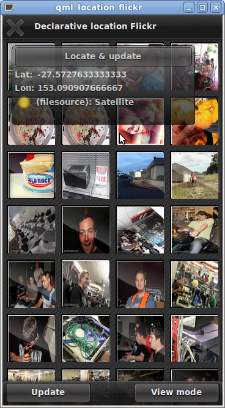

Files:
This example illustrates the positioning elements of declarative location.

The basic idea is to fetch public images from the Flickr service based on your current location. In case there is no default positioning provider on the platform the application is being run on, the example defaults to use a small NMEA log file (recorded in Australia).